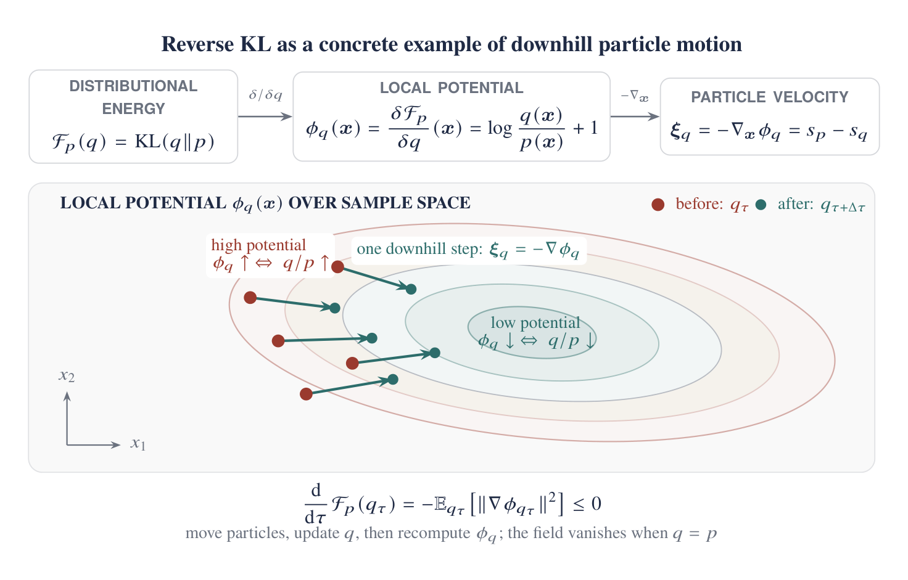
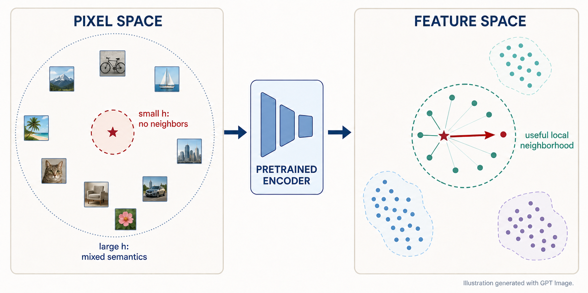

- How a distributional gradient becomes a particle direction
- Why Wasserstein-2 selects \(-\nabla\delta\mathcal F/\delta q\)
- Why detached regression implements the same local update
- DMD as KL gradient flow on noisy marginals
- Drifting Models through the KDE–score connection
- How W-Flow changes the batch interaction
1. From a distributional objective to a particle direction
We sample a latent \(\mathbf z\), pass it through the generator, and call the resulting output distribution \(q_\theta\):
Let the scalar \(\mathcal F_p(q)\) grade the whole generated distribution against a target \(p\). Its first variation turns that one global number into a scalar field over sample space: if we add or remove a tiny amount of probability near \(\mathbf x\), how does the objective change?
We call this local sensitivity \(\phi_q(\mathbf x)\). Part I showed that, after evaluating this field at the current distribution and holding it fixed for the first-order step, the functional chain rule can be rewritten in terms of generated particles:
Now we can read the last line particle by particle. At a sampled point \(\mathbf x\), the spatial gradient \(\nabla_{\mathbf x}\phi_q(\mathbf x)\) points in the direction in which moving that particle would increase the objective to first order. Therefore the requested descent direction is its negative:
If particles were free to move independently, one local optimization step would simply be
This gives the promised particle interpretation of distributional optimization: sample particles from \(q\), evaluate a direction at each particle, and move them along that direction. A neural generator cannot move its samples independently because they share parameters, so the Jacobian \(J_\theta\) pulls all of these particle-level requests back to one parameter gradient. Equation (1) becomes
This is the density-to-particle calculation we already established in Part I, now read as motion. One question remains: why should this particular local direction count as the steepest way to improve an entire distribution? To answer it, we leave the generator parameterization for a moment and describe probability itself as a moving density.
2. Wasserstein-2 turns particle motion into steepest descent
We now take a more general view. Let \(q_\tau\) be any probability density that evolves with a continuous optimization clock \(\tau\), without yet saying how it is parameterized. At every location \(\mathbf x\), let \(\boldsymbol\xi_\tau(\mathbf x)\) be an arbitrary velocity field. A particle reads the arrow at its current location as its velocity:
When all particles follow these arrows, probability cannot appear or disappear; it can only flow across the boundary of a region. This conservation law is the continuity equation:
Equation (3) is purely kinematic: it describes how any chosen field \(\boldsymbol\xi_\tau\) moves the density, but it does not yet tell us which field is best. To measure how an arbitrary field changes the objective, let \(\phi_\tau=\delta\mathcal F_p/\delta q(q_\tau)\). Then
Functional chain rule
Insert probability conservation
Integrate by parts
Assuming the boundary term vanishes at infinity,
Equation (4) gives the instantaneous objective change for any possible motion. To ask for the steepest direction, however, we must first say what counts as an expensive motion. Wasserstein-2 measures transport by squared displacement: moving probability mass twice as far costs four times as much. Over a short interval \(\Delta\tau\), a particle moves by \(\Delta\mathbf x\approx\boldsymbol\xi_\tau\Delta\tau\), so the corresponding local cost per squared unit of time is \(\mathbb E_{q_\tau}\|\boldsymbol\xi_\tau\|^2\).
We therefore balance the first-order decrease in Equation (4) against one half of this quadratic movement cost. Completing the square makes the Wasserstein-2 steepest field explicit:
Thus the Wasserstein-2 gradient-flow velocity is
Substitute it back into Equation (4):
This closes the loop with Section 1. There, \(-\nabla\phi_q\) was the direction attached to each sampled particle. Here, starting from an arbitrary evolving density and charging squared displacement, we have shown that the same direction is precisely the steepest descent direction of the distributional objective under Wasserstein-2 geometry.
3. Why these methods often look like ordinary regression in code
If every generated sample were independent, we could simply move it by \(\eta\boldsymbol\xi_q(\mathbf x)\). A neural generator cannot move samples independently because they share the same weights. Backpropagation finds the parameter update that best approximates all requested motions together. We can implement this directly, or turn each arrow into a frozen regression target.
Freeze the current iterate \(\theta_0\) and define
At the point where the target was formed,
This identity explains the shared code pattern: take the current sample, add one small field step, freeze the result, and regress toward it. But seeing an MSE loss in code does not tell us where the arrow came from. The same regression wrapper can implement a principled gradient flow or a directly designed heuristic field.
4. DMD's two scores are an attraction–spreading flow
Fix a diffusion level \(t\) while the optimization clock \(\tau\) runs, and choose
Its first variation is \(\log(q/p_t)+1\). Applying Equation (5) gives
Put the field back into the population equation
Substitute the field into Equation (3):
Equation (10) separates the two-score update into two population effects. First consider only the target score. If particles follow \(\dot{\mathbf x}=s_{p_t}(\mathbf x)\), then
so each particle climbs toward a region the target considers more likely. Now keep only the fake-score contribution. It becomes the heat equation \(\partial_\tau q=\Delta q\), whose solution spreads the model law like Gaussian smoothing. This does not mean DMD adds another random-noise step; the apparent diffusion is the population effect of deterministic arrows that depend on the current distribution.

At equilibrium \(q=p_t\), the two terms cancel exactly:
DMD averages this KL-WGF over noise levels and projects each field through the noisy generator Jacobian:
Using \(s_{p_t}=-\boldsymbol\epsilon_\varphi/\sigma_t\) and \(s_{q_t}=-\boldsymbol\epsilon_\psi/\sigma_t\) recovers the usual DMD teacher-minus-fake denoiser gradient. The WGF view does not replace the two-score derivation; it explains the distributional motion induced by it.
5. Drifting Models through the KDE–score connection
DMD obtains a particle direction from two denoisers. Drifting Models obtain one from nearby real and generated samples. To compare the two cleanly, we first put every quantity in the same feature space. Let \(E\) be a frozen pretrained visual encoder, let \(\mathbf x=f_\theta(\mathbf z)\) be a generated sample, and let \(\mathbf y\sim p\) be a real sample. We write
Thus \(q_E\) is the distribution of generated features and \(p_E\) is the distribution of real features. Drifting constructs a direction \(\boldsymbol\xi_{\mathrm{drift}}(\mathbf u)\), freezes one small feature-space step, and regresses the generator toward it:
The encoder weights stay frozen, but gradients through \(E\) still tell the generator how to change its output. This is exactly the detached-target wrapper from Equation (7). The new question is how neighboring features determine \(\boldsymbol\xi_{\mathrm{drift}}\).
A kernel-weighted neighborhood is a score estimator
Start with the real feature distribution \(p_E\). Draw a real feature \(\mathbf v\sim p_E\) and choose a Gaussian bandwidth \(h>0\), which controls the size of the neighborhood around \(\mathbf u\). Define the unnormalized Gaussian kernel
In this feature space, \(k_h\) assigns a large weight to features near \(\mathbf u\) and a small weight to distant ones. Their normalized kernel-weighted mean is
Write the KDE density explicitly
Suppose we have \(N\) real features \(\mathbf v_1,\ldots,\mathbf v_N\sim p_E\). Place a Gaussian bump around each one and evaluate those bumps at \(\mathbf u\). Their average is
where \(d\) is the feature dimension and \(C_h\) normalizes each Gaussian. In the population notation, the sample average becomes an expectation:
Thus \((p_E)_h(\mathbf u)\) is simply a smoothed measure of how many real features lie near \(\mathbf u\).
Differentiate one kernel weight
Only the exponent depends on \(\mathbf u\). Applying the ordinary chain rule,
Differentiate the log density
The Gaussian kernel lets us move the derivative inside the expectation. The constant \(C_h\) then cancels between the numerator and denominator:
The penultimate line is the key algebraic step: \(\mathbf u\) does not depend on the sampled neighbor \(\mathbf v\), so it comes out of the expectation and leaves the weighted mean \(M_{p_E}^h(\mathbf u)\). Equation (13) therefore says that the vector from \(\mathbf u\) to the local mean of nearby real features points uphill in the smoothed real density.
We now repeat exactly the same construction with generated neighbors \(\mathbf u'\sim q_E\). Their weighted mean \(M_{q_E}^h(\mathbf u)\) satisfies
So the real batch estimates the target feature score, and the generated batch estimates the model feature score. Neither estimate requires training another neural network.
Apply the same construction once to real features and once to generated features, then subtract:
This is the connection to score distillation. DMD estimates \(s_{p_t}-s_{q_t}\) on Gaussian-noised marginals with teacher and fake denoisers. The Gaussian KDE view of Drifting estimates the same target-score minus self-score shape on smoothed feature distributions, using real and generated neighbors instead. The real neighborhood supplies attraction; the generated neighborhood supplies the self term that keeps all particles from following the same attraction.
Why do we need a pretrained encoder?
The KDE view makes its role concrete. Natural images live in an enormous pixel space but concentrate near a much thinner, lower-dimensional manifold. With only a finite batch, almost every pair of images is therefore far apart in pixel-space Euclidean distance. A small bandwidth makes nearly every kernel weight vanish; a large bandwidth prevents the weights from distinguishing genuinely local neighbors. Pixel distance is also poorly aligned with semantics: shifting an otherwise identical image by a few pixels can produce a larger distance than changing its content.
A pretrained visual encoder maps images into a space with lower effective dimension and more meaningful local geometry. There, nearby points are more likely to represent semantically similar images, so a finite batch can provide a useful local density—and therefore score—estimate. From this perspective, pretrained hidden features are not merely a perceptual-loss choice: they are what makes the neighborhood-based probability approximation plausible in the first place. Using multiple feature levels and scales supplies such neighborhoods at several levels of abstraction.

6. W-Flow changes how the batch interaction is normalized
W-Flow keeps the same outer training loop: encode real and generated batches, construct a feature-space direction, freeze \(\mathbf u+\eta\boldsymbol\xi(\mathbf u)\), and regress the generator toward it. The difference is the rule used to coordinate the neighbors. Drifting builds local similarity weights; W-Flow solves a globally balanced soft transport problem with Sinkhorn iterations.
Write \(\widehat q_E=\{\mathbf u_i\}\) for the current generated feature batch, \(\widehat p_E=\{\mathbf v_j\}\) for the real feature batch, and \(\widehat q'_E=\{\mathbf u'_\ell\}\) for an independent second generated batch. For a regularization strength \(\lambda>0\), let \(T^\lambda_{\widehat q_E,\widehat p_E}(\mathbf u_i)\) be the average real destination assigned to \(\mathbf u_i\) by the generated-to-real Sinkhorn plan. Define \(T^\lambda_{\widehat q_E,\widehat q'_E}(\mathbf u_i)\) analogously for self-transport. The implemented direction is
The two formulas now look deliberately parallel. Drifting uses kernel-weighted local means; W-Flow uses barycentric means from transport plans whose row and column masses are balanced jointly across the batch. The independent second generated batch prevents a particle from matching itself at zero cost. Both methods then use the detached regression target in Equation (12).
At the population level, the W-Flow field is derived from the Wasserstein gradient of a debiased Sinkhorn divergence. That derivation is what makes W-Flow more than a different neighbor-weighting heuristic, but we do not need the full optimal-transport proof to understand its implementation here.
7. The comparison that survives the algebra
| DMD | Drifting Models | W-Flow | |
|---|---|---|---|
| Objects being compared | Noisy marginals \(q_t\) and \(p_t\) | Generated and real feature distributions \(q_E\) and \(p_E\) | Generated and real distributions in the chosen sample or feature space |
| Ideal or explanatory field | \(s_{p_t}-s_{q_t}\) | Designed target-minus-self field; its Gaussian mean-shift abstraction is \(h^2[\nabla\log(p_E)_h-\nabla\log(q_E)_h]\) | Population Sinkhorn field \(T^\lambda_{q,p}-T^\lambda_{q,q}\) |
| Practical field estimator | Teacher and fake denoisers evaluated at generated noisy samples | Real/fake feature affinities with joint row/column normalization and cross-weighting | Generated-to-real Sinkhorn plan minus an independent two-batch self-transport plan |
| Explicit distributional objective | Reverse KL on noisy marginals, averaged over \(t\) | Not generally identified for the practical field | Debiased Sinkhorn divergence |
| Role of the highlighted identity | Exact KL-WGF direction when both scores are exact | KDE identity explains the score-distillation connection, not the full production field | OT barycentric direction; not a KDE estimator |
| Generator update | Field–Jacobian contraction | Detached feature-target regression | Detached sample- or feature-target regression |
The useful unification is therefore not “all three are the same method.” It is a shared workflow:
DMD shows the target-score minus self-score direction using denoisers. The Gaussian KDE view of Drifting recovers the same shape from feature-space neighborhoods. W-Flow keeps the same batch-field and detached-regression pattern, but replaces local kernel weighting with globally balanced Sinkhorn plans tied to an explicit transport objective. That is the useful connection—not that all three methods are identical.
References
[1] Yin et al. “One-step Diffusion with Distribution Matching Distillation.” CVPR 2024.
[2] Deng et al. “Generative Modeling via Drifting.” 2026.
[3] Han et al. “One-Step Generative Modeling via Wasserstein Gradient Flows.” 2026.
[4] Gretton et al. “On the Wasserstein Gradient Flow Interpretation of Drifting Models.” 2026.